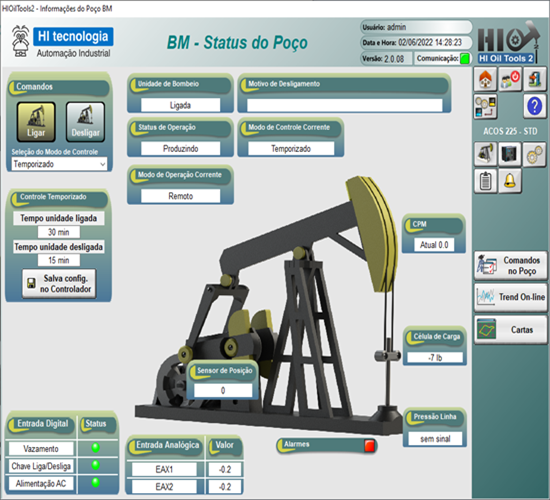
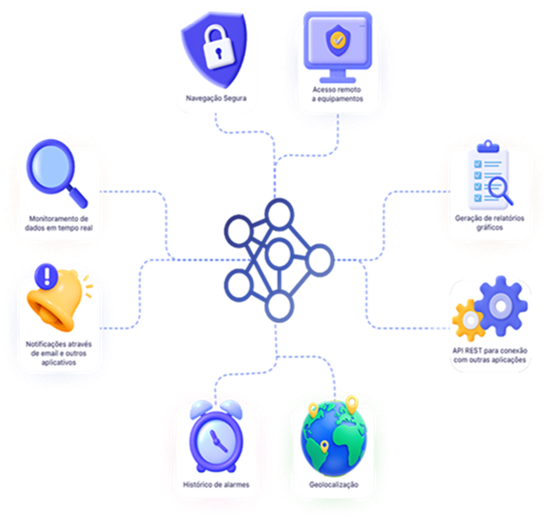

Na sala de controle ou de qualquer lugar: dois caminhos para ver, registrar e comandar o processo.
Esta é a parte de software da linha HI. Você aprende a escolher entre o supervisório HIscada Pro com o servidor MPL Server, que rodam nos computadores da rede local, e o Portal de Telemetria, que roda na nuvem e abre no navegador. E, principalmente, entende como cada um é cobrado, para levar ao orçamento as informações certas.
Tempo estimado: 2h30 (leitura, quiz e preparo dos exercícios do encontro).
O CLP controla, mas guarda os dados "dentro dele". O supervisório (SCADA, do inglês Supervisory Control And Data Acquisition: supervisão, controle e aquisição de dados) transforma esses dados em informação para decidir:
O CLP é o motorista; o supervisório é o rastreador da frota com painel de controle: mostra onde cada veículo está, avisa quando algo dá errado e guarda o histórico de cada viagem.
A HI tem dois supervisórios: o HIscada Pro, que roda em computadores da rede local, e o Portal de Telemetria, que roda na nuvem. A IHM (Etapa 6) mostra uma máquina, no painel; o supervisório mostra a planta inteira, para várias pessoas.
Fontes: Treinamento de Produto, p. 19 e 23; Catálogo Geral, p. 30 e 33.

O HIscada Pro é um pacote de software para desenvolver, testar e rodar aplicações de supervisão e controle de plantas, processos e máquinas. Roda em computadores da rede local da empresa, com vários computadores acessando as telas. É um dos produtos mais usados pelos clientes da HI. Lançado em 2012.
O HIscada Pro se comunica com servidores de dados OPC, um padrão de comunicação. Isso dá acesso a equipamentos de qualquer fabricante, desde que haja um servidor OPC "no meio de campo", traduzindo o protocolo do equipamento para OPC. Na HI, esse servidor é o MPL Server (item 4).
O HIscada Pro é a resposta para "quero ver toda a planta num computador da sala de controle", principalmente quando o cliente não quer ou não pode depender da internet. O argumento de "qualquer fabricante" vale para quem tem equipamentos de várias marcas.
Fontes: Treinamento de Produto, p. 19 e 20; Catálogo Geral, p. 5 e 33. CFR 21 Part 11: explicação geral da norma.
O HIscada Pro é vendido como licença para rodar o projeto. Ela depende de duas coisas:
| Licença | Servidor OPC | Tags OPC (máx.) | Tags locais (máx.) | Viewers (máx.) | Sessão (máx.) |
|---|---|---|---|---|---|
| Teste | qualquer | 16 | 32 | 1 | 2 h |
| L1 | MPL Server | 32 | 64 | 2 | sem limite |
| L2 | MPL Server | 160 | sem limite | 5 | sem limite |
| L3 | qualquer | 160 | sem limite | 5 | sem limite |
| L4 | MPL Server | 600 | sem limite | sem limite | sem limite |
| L5 | qualquer | 600 | sem limite | sem limite | sem limite |
| L6 | MPL Server | sem limite | sem limite | sem limite | sem limite |
| L7 | qualquer | sem limite | sem limite | sem limite | sem limite |
| LDev (desenvolvimento) | qualquer | sem limite | sem limite | sem limite | 2 h |
Repare na coluna "Servidor OPC": algumas licenças funcionam só com o MPL Server; outras, com qualquer servidor OPC do mercado. A licença Teste e a LDev têm sessões de até 2 horas: servem para avaliar e para desenvolver o projeto, não para operar a planta.
Pense num plano de streaming: o preço muda com a quantidade de telas assistindo ao mesmo tempo (viewers) e com o tamanho do catálogo (tags). Quem assiste sozinho num celular não precisa do plano família.
Para o orçamento, leve: quantas tags (aproximadamente, a partir da lista de sinais e dos equipamentos que serão lidos), quantos computadores vão abrir as telas, e qual servidor OPC será usado (MPL Server ou outro). Com isso, o setor de vendas indica a licença e o valor.
A tabela mostra como as licenças se diferenciam; ela não traz valores. Não estime preço nem escolha a licença sozinho se tiver dúvida sobre a contagem de tags: o suporte ajuda a contar.
Fonte: Treinamento de Produto, p. 19 (texto e tabela "Licenças HIscada Pro", lida da imagem).
Servidores OPC são softwares que abrem conexão (serial ou Ethernet) com os equipamentos (CLPs, IHMs, inversores), leem os dados no protocolo de cada um e os convertem para o padrão OPC, para que supervisórios como o HIscada Pro tenham acesso.
O MPL Server é o servidor OPC da HI. Ele converte Modbus RTU ou TCP para OPC: conversa com qualquer equipamento que fale Modbus, inclusive os CLPs da HI, e entrega os dados para qualquer supervisório OPC, inclusive o HIscada Pro. Na prática, ele é usado junto com o HIscada Pro em quase todos os projetos (o Treinamento fala em 99% das vezes).
Regra comercial: se o cliente vai usar o MPL Server com um equipamento Modbus que não é da HI, ele precisa comprar uma licença do MPL Server para esse equipamento, independente da licença do HIscada Pro. Não esqueça esse item no orçamento.
O MPL Server é o intérprete de uma reunião: cada equipamento fala o seu Modbus, e ele repete tudo em "OPC" para o HIscada entender. Para os CLPs da casa, não há licença extra do MPL Server; para convidados de outras marcas, há uma licença à parte.
Pergunte sempre: "além dos equipamentos HI, o supervisório vai ler equipamentos de outros fabricantes? Quais e quantos? Eles falam Modbus?" A resposta muda o orçamento.
Fontes: Treinamento de Produto, p. 20 e 21.

O Portal de Telemetria é a plataforma de supervisão 100% em nuvem da HI. Foi criado para dar acesso remoto, pela web, às informações de equipamentos da HI ou de terceiros, sem precisar de um computador dedicado nem comprar a licença de um supervisório tradicional. Qualquer equipamento com internet (computador, tablet, celular) entra na conta do cliente e vê as informações: não há a restrição à rede local do HIscada Pro. Lançado em 2015.
O Portal fica nos servidores da Amazon (AWS), com tráfego criptografado, uma única conexão de saída com a rede, isolamento de rede e autenticação dos equipamentos. A HI oferece implementação e acompanhamento técnico sob demanda.
O Portal é a resposta para "quero ver pelo celular, de qualquer lugar" e para quem tem muitos pontos espalhados (estações, poços, fazendas). O white label é argumento forte para integradores e fabricantes que querem oferecer a plataforma com a própria marca.
Fontes: Treinamento de Produto, p. 22 e 23; Catálogo Geral, p. 5, 30 e 31.
O Portal é cobrado por mensalidade ou anuidade, conforme o tipo de plano e a quantidade de dados contratada. Cada plano libera um conjunto de recursos. Há também a opção Standard ou White Label.
| Recurso | Free | Basic | Plus | Enterprise |
|---|---|---|---|---|
| Dados, atualização de horário, gerência de conexão, usuários ilimitados | ✓ | ✓ | ✓ | ✓ |
| Histórico, alarmes, registro local, planilhas, relatório gráfico | ✓ | ✓ | ✓ | |
| Acesso remoto, Telegram, lista de texto, Google Maps, telas sinóticas | ✓ | ✓ | ||
| API REST, modelos | ✓ |
O Treinamento mostra um print com valores dos planos. Não use esses valores: eles mudam e saem do orçamento do setor de vendas. Ensine ao cliente a lógica (recursos do plano × quantidade de dados × mensal ou anual) e mande para o orçamento.
Para o orçamento, leve: quantos dados o cliente quer acompanhar, que recursos ele precisa (alarmes? telas sinóticas? integração com outro sistema?), mensal ou anual e se quer white label. Os recursos apontam o plano.
Fonte: Treinamento de Produto, p. 22 (texto e quadro de planos, lido da imagem, sem os valores).
| HIscada Pro + MPL Server | Portal de Telemetria | |
|---|---|---|
| Onde roda | Computadores da rede local da empresa | Nuvem (AWS), aberto no navegador |
| Quem acessa | Computadores da rede local (viewers) | Qualquer dispositivo com internet |
| Precisa de internet? | Não | Sim, nos equipamentos e em quem acessa |
| Precisa de computador dedicado? | Sim | Não |
| Como é cobrado | Licença por tags e viewers (+ MPL Server para equipamento Modbus de terceiros) | Plano (recursos) × quantidade de dados, mensal ou anual |
| Combina com | Sala de controle, planta concentrada | Pontos espalhados, gestão à distância, celular |
Não é "um ou outro" para sempre: há clientes que usam o HIscada Pro na sala de controle e o Portal para a gestão acompanhar de longe. Descubra quem precisa de quê.
Fontes: Treinamento de Produto, p. 19 a 23; Catálogo Geral, p. 30 a 33.
Com o HI Connect (Etapa 5), a HI concentra toda a solução IoT do cliente: CLP, modem 4G, plataforma em nuvem e plano de dados.
"Um fornecedor só para tudo" simplifica a vida do cliente: um contato para o equipamento, a conexão e a plataforma. Sempre que vender Portal com equipamento em campo sem internet, pergunte pelo plano de dados e ofereça o HI Connect.
Fontes: Catálogo Geral, p. 20 e 38; Etapas 4 e 5.
| O cliente pergunta | Como responder |
|---|---|
| "Quanto custa o HIscada?" | A licença depende de quantas tags e quantos computadores (viewers) vão acessar, e do servidor OPC. Com esses números, o orçamento indica a licença e o valor. |
| "Tenho CLPs de outra marca. O HIscada lê?" | O HIscada se comunica via OPC com equipamentos de qualquer fabricante. Se eles falam Modbus, o MPL Server faz a ponte, com uma licença do MPL Server para os equipamentos de terceiros. Anote marcas e quantidades. |
| "Preciso instalar servidor para usar o Portal?" | Não: o Portal fica na nuvem e abre no navegador, sem computador dedicado. |
| "É seguro colocar meus dados na nuvem?" | O Portal fica na AWS, com tráfego criptografado, uma única conexão de saída, isolamento de rede e autenticação dos equipamentos. Para detalhes técnicos de TI, o suporte complementa. |
| "Quero vender o Portal com a minha marca." | Existe a opção White Label: plataforma completa com a identidade visual e o endereço da sua empresa. |
| "O Portal integra com o meu sistema de gestão?" | Pela API REST, disponível no plano Enterprise. Anote o sistema e confirme o escopo com o suporte. |
Confira o que ficou. A correção é na hora, com a explicação de cada resposta. Acerte pelo menos 80% antes de marcar a etapa como concluída.
Traga preparado:
Casos com base no Treinamento de Produto (p. 19 a 23) e no exercício 12.